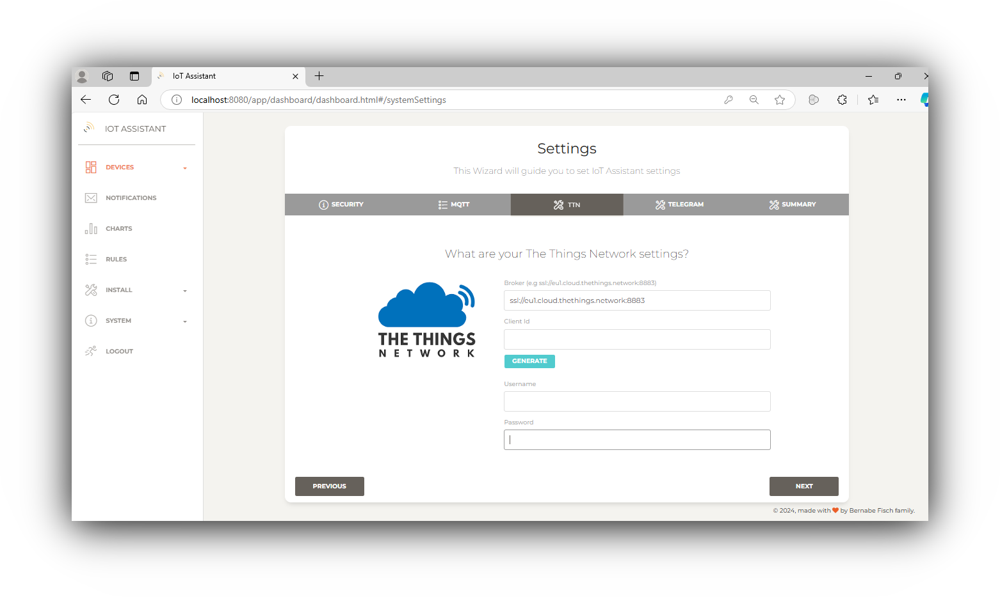
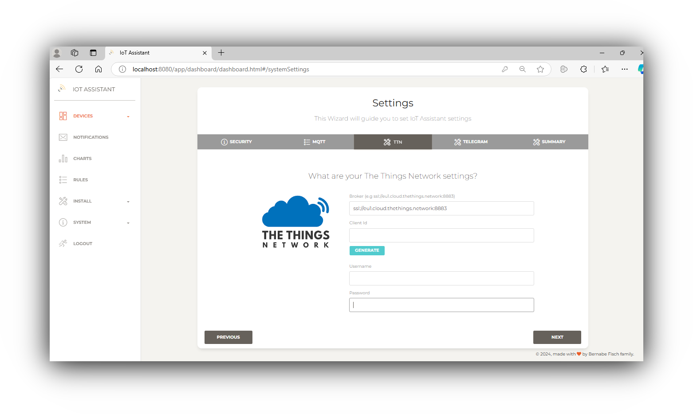

IoT Assistant
IoT Assistant
What is IoT Assistant?
IoT Assistant is an open-source web application. It enables to manage sensors, actuators, GPS's and cameras interfaced via MQTT, HTTP or with The Things Network.
Java based
The app is based in Java Spring Boot and its ready to be run on any Windows, Mac, Linux computer or cheap board (e.g. a Raspberry Pi Zero W) hosting a JVM without the need to virtualize, install or use third party apps or cloud services.
Quick and easy
It should meet the needs of most users right from the start, prioritizing simplicity over flexibility while it still allow developers to add more complexity if they have particular requirements such as customizing or integrating it with third party like Aqara or Tuya devices.
Getting started
The only step needed to run IoT Assistant is to execute the .jar file provided. Execute it by double-click on it or via command line this way:
# java -jar iot-assistant-0.0.1.jar
Depending on the Java version you may need to execute this command instead:
# java --add-opens java.base/java.lang=ALL-UNNAMED --add-opens java.base/java.lang.invoke=ALL-UNNAMED -jar iot-assistant-0.0.1.jar
Once it is running you should see a login page at http://localhost:8080. Default user and password is admin iotassistant
Once logged in click on System then Settings to configure your Iot Assistant instance to connect to your devices. If you are not sure how to fullfill the settings see this guide.
 

{kind=link}
Using IoT Asssistant
Following pages will guide you using IoT Assistant:
Notifications are supported via web and Telegram. For a complete list of Use Cases see this.